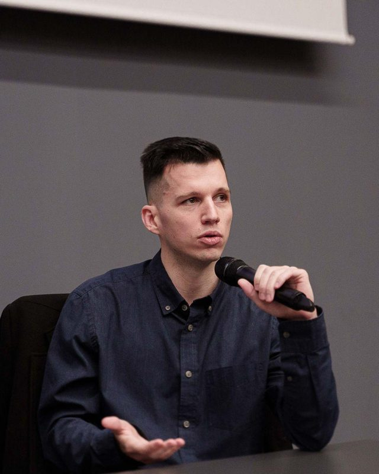

Timo Zimonjić
Internacionalni govornik i high-performance kouč
Feniks efekat 2.0 – Izgradi svoj novi preduzetnički život
Više o predavanju
Timo se već pet godina bavi NLP-om i koučingom. Radio je sa profesionalnim sportistima, direktorima prodaje, preduzetnicima, programerima, dizajnerima i trenerima. Kreirao je metodologiju Feniks efekat, koja mu je pomogla da za manje od 15 meseci od „nevidljive osobe“ postane internacionalni govornik. Na Skakaonicama predstavlja unapređenu verziju, Feniks efekat 2.0, koja će ti pomoći da izgradiš svoj novi preduzetnički život.